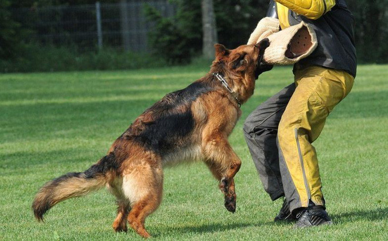

Becgie

-Chó Becgie được người Đức lai tạo lần đầu năm 1899, chủ yếu dùng để chăn cừu.
-Nhưng với sự thông minh vượt bậc, trung thành, nhanh nhẹn chúng nhanh chóng được huấn luyện để phục vụ trong ngành cảnh sát và quân đội.
-Theo thống kê, chó Becgie là giống chó phục vụ nhiều nhất trong lực lượng cảnh sát các nước trên thế giới.

-Tại Việt Nam, chó Becgie cũng được sử dụng rất nhiều trong hoạt động phòng chống tội phạm.
-Chúng tương đối phổ biến nên chỉ có giá từ 4-7 triệu.